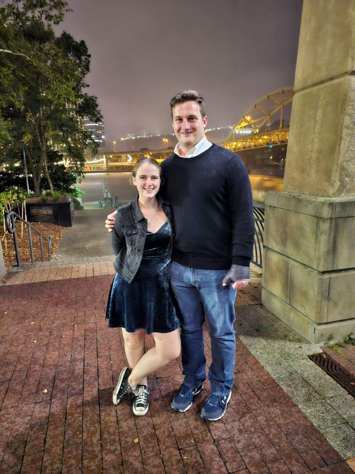
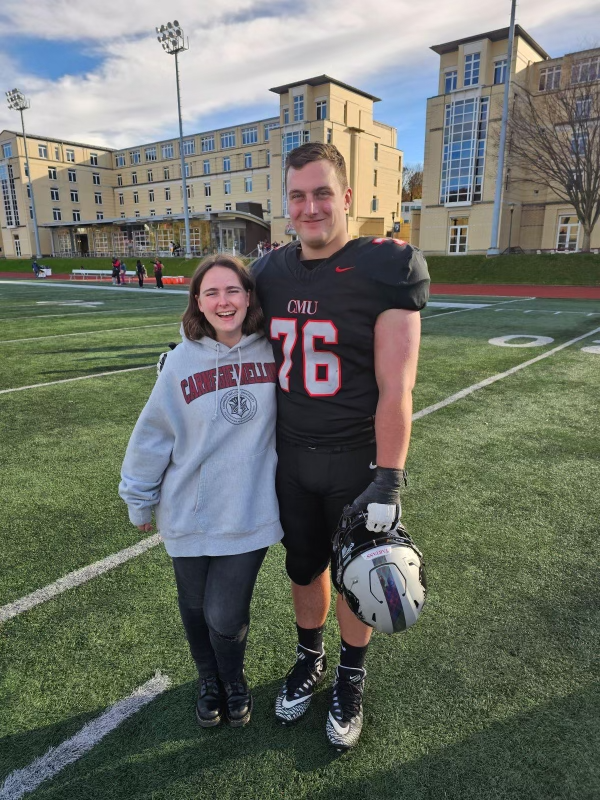
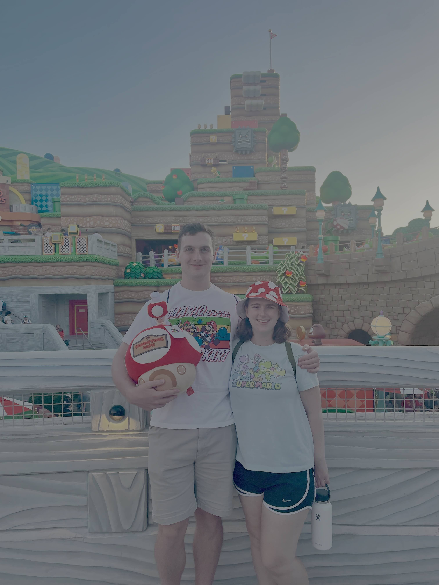
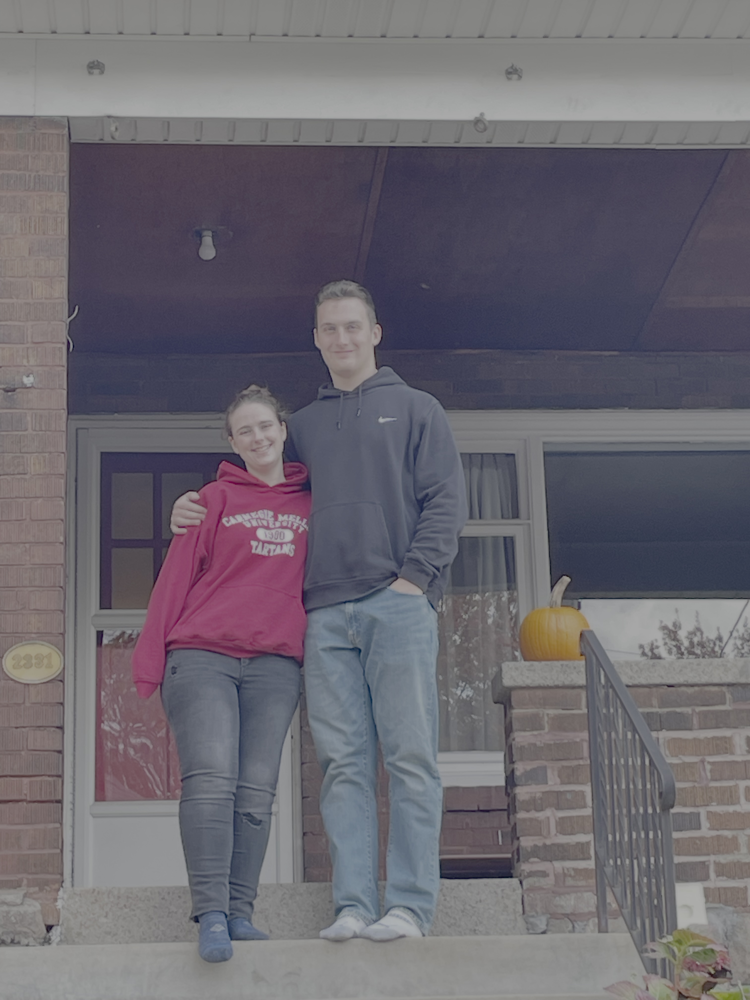
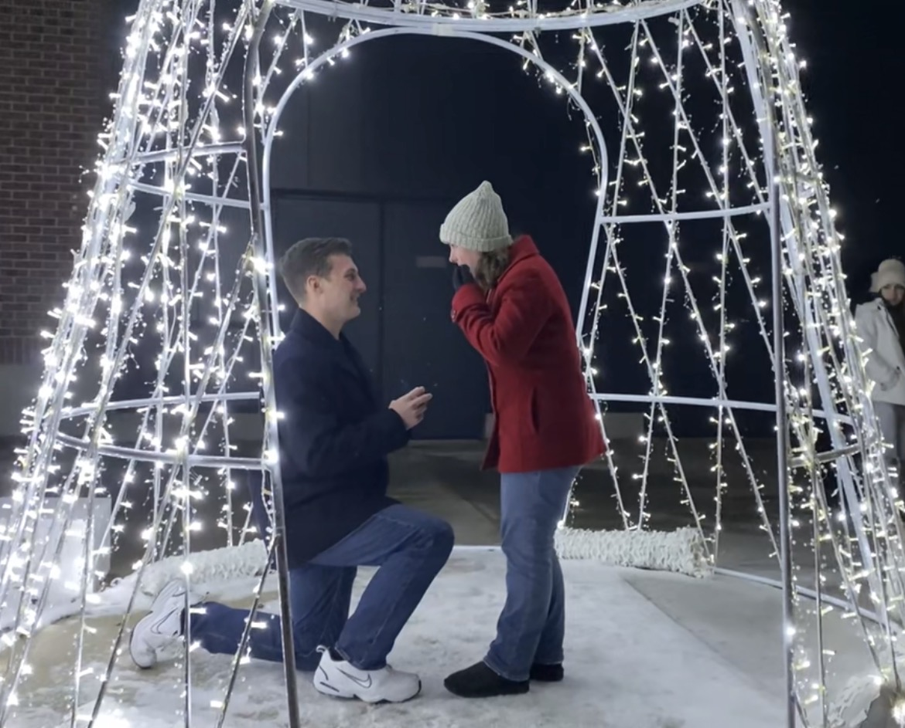
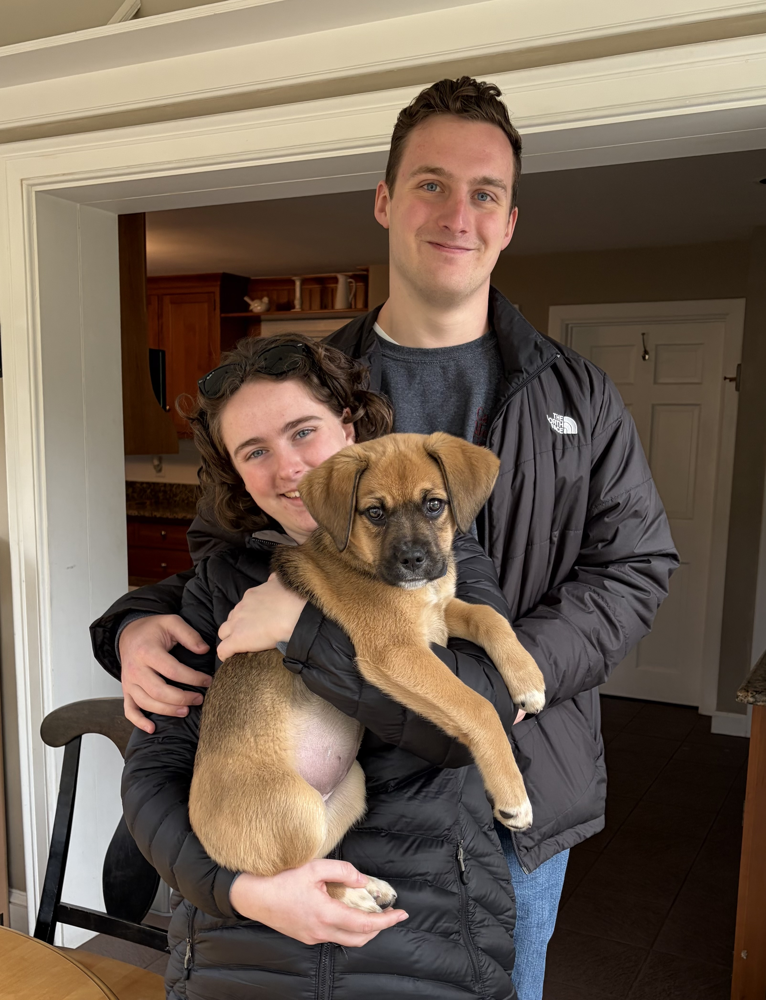

Photo Gallery

During the first year of their relationship, Hunter and Elizabeth flew back and forth between Pittsburgh and Boston once a month to visit one another. Both enjoyed getting to experience a new city and spend time together.

After undergrad, Elizabeth moved to Pittsburgh to pursue her PhD in Statistics and Data Science at CMU as Hunter was finishing his final semester of his Masters in Mechanical Engineering and his final season of football. One of their favorite places to visit in the city was Phipps Conservatory.

Hunter finished his final football season in Fall 2024. Elizabeth was able to attend most of his home games and cheered him on as his team made a deep playoff run that winter.

After Christmas in 2024, Hunter's family took a trip to Hawaii and invited Elizabeth. Hunter and Elizabeth had a great time exploring the Big Island, visiting black sand beaches, waterfalls, rainforests, and even snorkeling in a coral reef.

Both Hunter and Elizabeth have long shared a love for all things nerdy. They've attended Steel City Con together (in cosplay, of course) and both hope to one day visit San Diego Comic Con.

For Elizabeth's Fall Break 2025, Hunter and Elizabeth traveled to Epic Universe in Orlando, FL, fulfilling Elizabeth's near-life long dream of visiting Harry Potter World, and their shared desire to experience the new Nintendo World.

On Halloween 2025, Hunter and Elizabeth moved into their first house together in Squirrel Hill.

On New Year's Eve at Navy Pier in Chicago, IL, Hunter proposed to Elizabeth shortly before midnight fireworks. They spent the rest of their evening celebrating the engagement and the new year with their friends Taylor and Patrick before heading back to Hunter's home the next day to officially celebrate with family.

In March, 2026, Hunter and Elizabeth expanded their family by welcoming Poppy, a puppy rescue from Paws Across Pittsburgh, into their home. Poppy has brought some much needed chaos, snuggles, and a ton of love bites to the Campbell family.